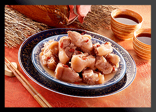
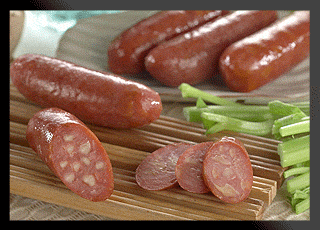
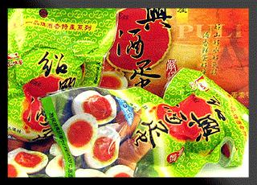
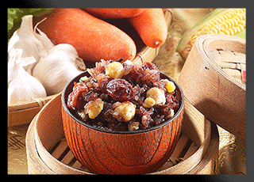

關於正味馨
首頁 > 關於正味馨

說到南投埔里您一定會想到埔里酒廠，埔里周圍的店家以酒廠為特色，紛紛推出以紹興酒香入味的特色美食，其中又以紹興香腸深受民眾所喜愛。
位在埔里鎮中華路的正味馨食品創立至今已有三十多個年頭，專營肉類食品加工，好滋味歷久不衰，創造出遠近馳名的好口碑，在埔里地區即有三家分店，以好口味滿足了許多饕客的味蕾，也是適合年節送禮的「好擔路」，更有「代客寄送」的優質服務，讓您輕輕鬆鬆不需自己多花時間與兩次的寄送費用，就可以將美味又大方的禮盒送到親朋好友手中。
埔里正味馨的紹興香腸選用通過CAS檢測合格的豬肉，有著紮實的口感以及完美的調味，一口咬下淡淡的酒香即在口中散開，並且有原味、蒜味、黑胡椒與麻辣四種口味可選擇。除了紹興香腸之外，正味馨也有鹹豬肉食品，以清蒸的方式讓鹹豬肉嚐起來更加清爽不油膩，更適合現代人養生的需求。
正味馨的酒蛋系列則是近年來不斷創新研發出的特色食品，也是詢問度最高的商品，採用CAS嚴選的雞蛋、埔里紹興酒以及數十種的珍貴藥材浸泡，許多民眾一嚐鮮即愛上酒蛋綿密的口感與香氣。還有以紹興酒與中藥材醃製入味的紹興鳳爪，不論冷熱皆能品嚐出香Ｑ滑嫩的好滋味，當桌上佳餚或零嘴都相當適宜。

專業客製化產品
- 針對當地特色產品及客戶需求開發製作出特殊口味的香腸肉品及蛋品加工
- 寶貝滿月時所需的油飯及彌月紅喜酒蛋禮盒等精製彌月禮盒
- 年節送禮可針對客戶所需及價位需求搭配所要的精美禮盒哦
服務項目
- 紹興傳統美食、各式農特產品、禮盒
- 當地特色食品開發；專業食品代工生產
- 客製化彌月喜酒蛋製作
產品類別
【蛋類】
|
【香腸類】
|
【煙燻類】
|
【米食類】
|
交通資訊
- 北上
- 國道3號→下草屯交流道→台14線→埔里→正味馨企業
- 國道３號→國道６號下埔里第２交流道
- 南下
- 國道1號→下中清交流道→中彰快速道路→台14線→埔里→正味馨企業